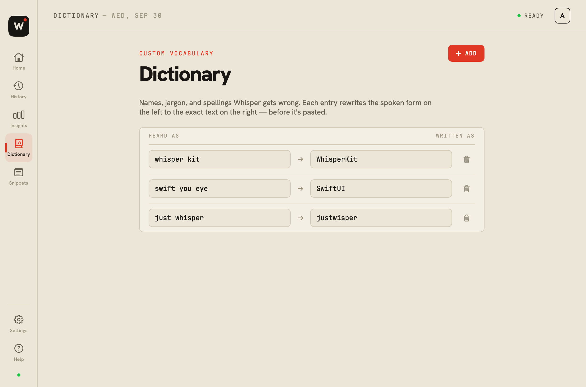
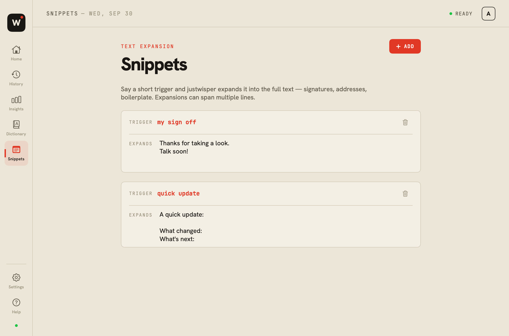

Hold to talk.
Press and hold Right Option. The floating bar appears while you speak.
LOCAL VOICE DICTATION / OPEN SOURCE
A little less typing.
A little more thinking out loud.
Hold a key, say what’s on your mind, and put it into words. Transcribed on your Mac, ready for the app you’re using.
Apple Silicon · macOS 14+ · Free, MIT licensed


THE EVERYDAY LOOP
No new editor to live in. Focus a text field in your usual app, then let your voice do the typing.
Press and hold Right Option. The floating bar appears while you speak.
See a live preview. Your Mac runs the speech model locally.
A final pass cleans up your words and pastes them at your cursor.
A thought for tomorrow
Less time typing. More time making things.
Hold Right Option to start a dictation.
Right ⌥
A SMALL APP. A SIMPLE BOUNDARY.
Your microphone audio is transcribed locally with WhisperKit and Core ML. No account, no subscription, no app telemetry.
Models and tokenizer files download during setup. Once cached, dictation works offline. Your transcript history lives locally, too.
Read exactly what’s stored ↗MORE THAN A MICROPHONE BUTTON
A native workspace for your words, the names you use, and the things you say again and again.


Screenshots use fictional examples. No personal dictation history is shown.
Find, copy, or reinsert a previous dictation. Erase your local history from Insights.
Pin formatting modes to your apps. Optional Apple Intelligence polish is available on supported Macs.
Esc cancels a take. A brief undo window lets you recover an accidental cancellation.
FOUR WAYS TO FOLLOW ALONG
Choose a compact bar, an editorial card, a slim ticker, or a proof sheet. Drag it where it feels right.
READY WHEN YOU ARE
Free to use. Open to make better.
Get the macOS release ↓Early release · Apple Silicon · macOS 14+
Prefer to build it yourself? ↗THE PRACTICAL QUESTIONS
Yes, after the selected model and tokenizer files finish downloading. Choosing a model you haven’t used before needs internet again. Transcription itself runs on your Mac.
After a full quit, the model loads back into memory from disk. Closing the window keeps the menu-bar app and model available. Cached model files don’t need downloading again.
Tiny, Base, and Small are English models. The Turbo option is multilingual. Accuracy and speed depend on your model, language, microphone, and Mac.
It uses macOS Accessibility, with a clipboard-based paste fallback. Most ordinary text fields work; secure fields and some apps may block insertion. Your completed transcript remains available to copy from History.
No. justwisper is an independent, open-source project inspired by the convenience of push-to-talk dictation. It is not affiliated with Wispr Flow, Apple, or OpenAI.
BUILT BY DHIRAJ CHAUDHARY
justwisper is an independent project, built in SwiftUI and shared under the MIT license. Try it, report a rough edge, or help make the next version better.